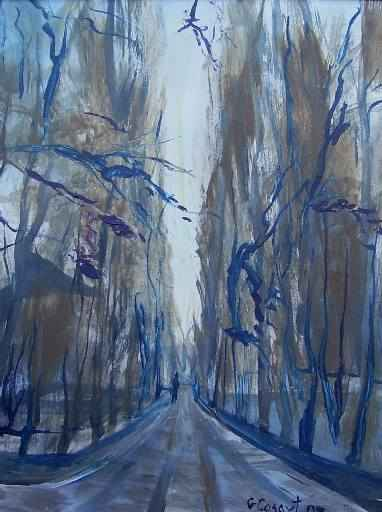

POESÍA
(Un mundo insospechado)
SOBRE LA POESÍA DE TODOS LOS TIEMPOS
| Autor: Edgardo Ronald Minniti Morgan (Córdoba, Argentina) |
FUGA ORQUESTAL
|
 "Final del camino" Pintura en acrílico. |
El autor, nacido en San Javier, provincia de Santa Fe, Argentina y radicado en Córdoba, es poeta, escritor, historiador especializado en la historia regional y de la astronomía, divulgador científico - Ex docente del Observatorio Astronómico de la Biblioteca Popular Constancio C. Vigil de Rosario; como así Director del Boletín Astronómico de ese Observatorio y de la revista “Hoja Astronómica”, que alcanzaran divulgación internacional. Actualmente es Miembro de la Red Mundial de Escritores en Español e integrante del Grupo de Investigación en Enseñanza, Difusión e Historia de la Astronomía - Observatorio Astronómico de Córdoba – Universidad Nacional de Córdoba, Argentina. Se ha preocupado en sus trabajos por el hombre, el contexto y su enfrentamiento con la realidad diversa; la adquisición del conocimiento y sus respuestas, a veces inteligentes, otras caprichosas e irracionales, pero profundamente humanas. Ha sido objeto de diversos premios nacionales e internacionales por su obra. Destacándose el premio internacional Herbert C. Pollock - 2005.
|
|---|
Musicalización: Castillo midi